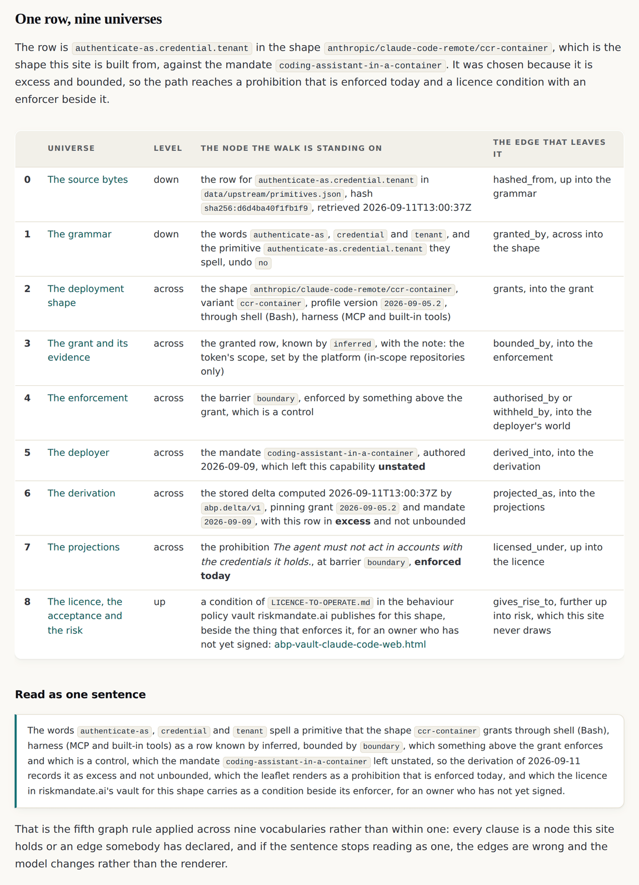
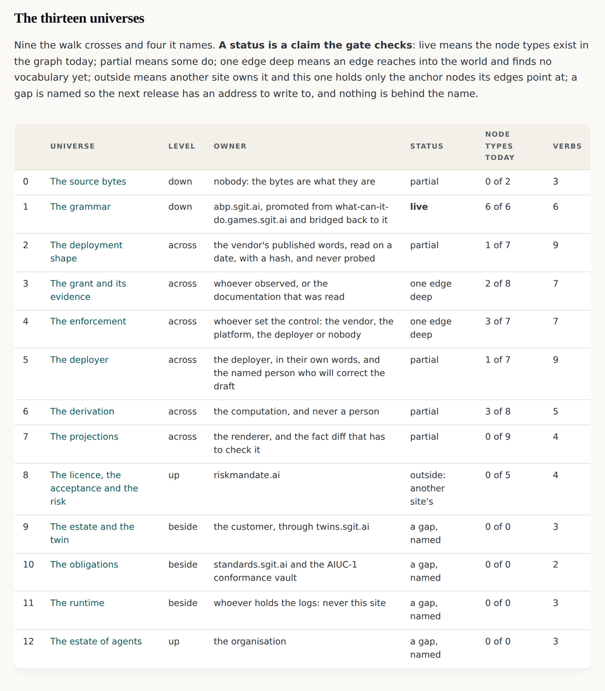
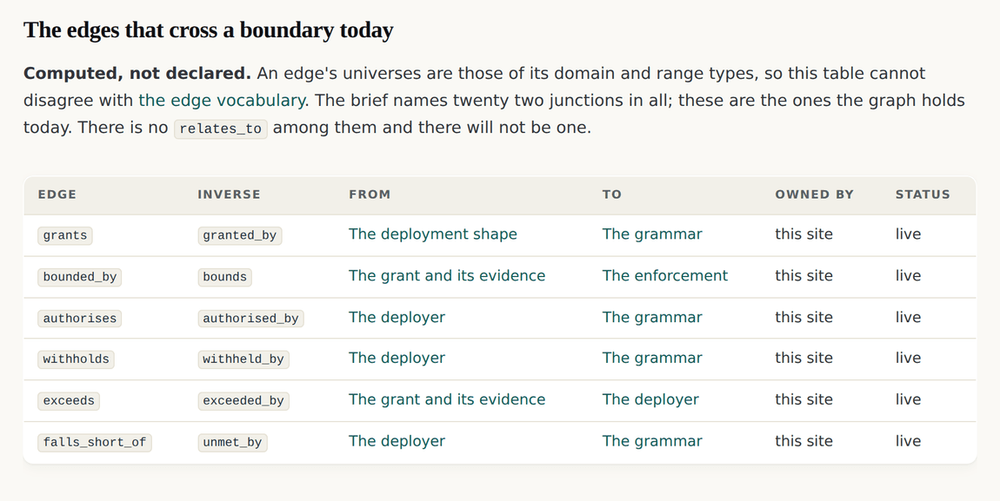
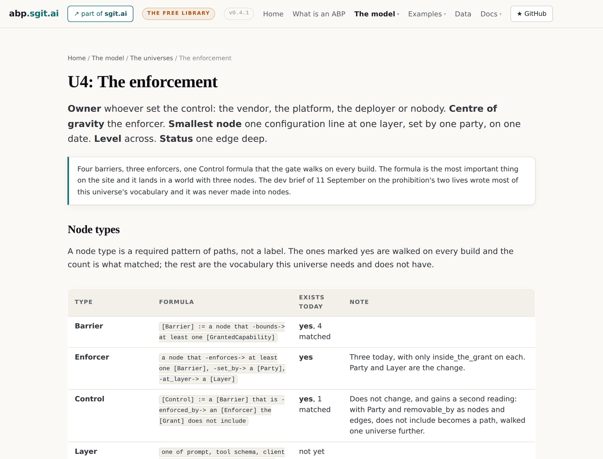
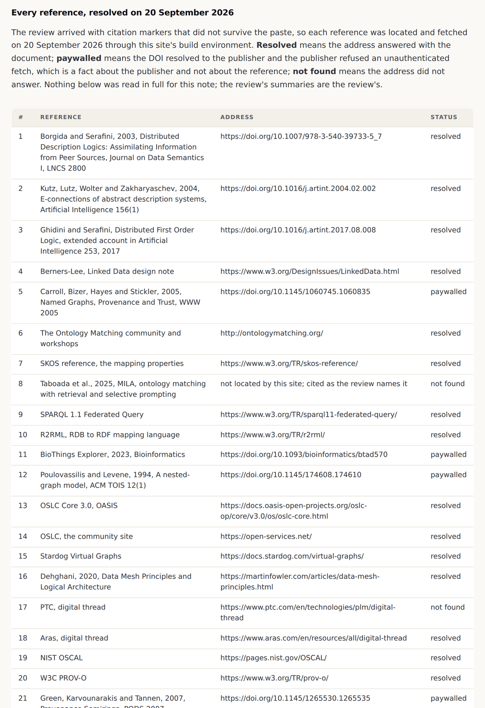

v0.4.1: The map became files, pages and a gate check, and the walk is rebuilt on every build
A map in prose is a claim. Thirteen universes as data with a page each, a walk computed from the published rows, and a fourteenth check that refuses to publish a world nobody owns. The walk immediately found an error in the brief that drew it.
v0.4.1 tag, so it shows the site as it stood at that release and not as it stands today. Read on to v0.4.2, or back to v0.4.0.A map in prose is a claim
v0.4.0 drew the map in a brief. A brief is a document, and a document cannot be checked. This release turns the map into files the build reads, pages that render one query, and a check that refuses to publish a world nobody owns.
Thirteen universes are authored once, in one module, each with its owner, its centre of gravity, its smallest node, its status, its node types and its verbs. The build writes one file per universe and an index that carries the walk.
The walk is computed, not written
The index carries one capability row walked through nine universes. Every cell of it is built from the published profile, the published mandate and the stored delta on every build, so the sentence it reads as cannot drift from the rows it is made of.

send.endpoint.world through the container shape. That shape does not grant it: it grants send.endpoint.allowed, and the mandate asked for it, so the path would never have reached a prohibition at all. The data walks authenticate-as.credential.tenant, which is excess and bounded. The correction is recorded in the brief, above the table it corrects, rather than applied quietly.Thirteen worlds, and a status that is a claim

| Status | What it claims | What the gate checks |
|---|---|---|
live | its node types exist in the graph today | every declared type is in the graph, or the build fails |
partial | some of them do | the ones marked as existing really do |
one-edge | an edge reaches in and finds no vocabulary yet | the same |
outside | another site owns it; this one holds the anchors | it claims no node types of its own |
gap | named so the next release has an address | it declares none |
Two statuses moved during this release because the status became a check. The source bytes and the derivation were written down as live in the brief. The gate disagreed: provenance is per file rather than per node, and a delta record is a file rather than a node in the graph. Both are partial, and the prose in the brief stands as written with the data as the record.
A junction is computed rather than declared
The property that turns a set of graphs into a fractal rather than a pile is the edge that crosses from one world into another. This site does not declare which edges those are. Every node type names its universe, every edge names the universes of its domain and range, and an edge crosses when the two differ.

One page per world

The fourteenth check, and proving it bites
A check that has never failed is a check nobody has tested. Before this release was committed the index was corrupted three ways on purpose, and the gate named each one.
$ node admin/build/validate.js
validate: 3 error(s)
x data/universes/index.json: u3 has no owner -- a world nobody owns is a
merge waiting to happen
x data/universes/index.json: grants crosses from u2 to u1 and is not listed
as a junction
x data/universes/index.json: the walk stands on send.endpoint.world, which
anthropic/claude-code-remote/ccr-container does not grant
And a reading of the prior work, published as received
The same release carries something that is not this site's: an external review of the Fractal Semantic Graphs claim against the research it sits beside. Distributed description logics and their bridge rules, E-connections, distributed first order logic, named graphs, ontology alignment, federated query, engineering lifecycle integration, data mesh, machine readable control catalogues and two formal accounts of provenance.

The universes · The universes as JSON · The research note · v0.4.1's own release record